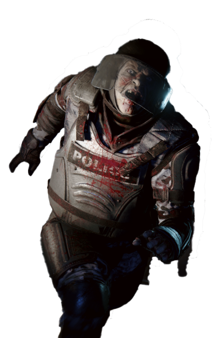
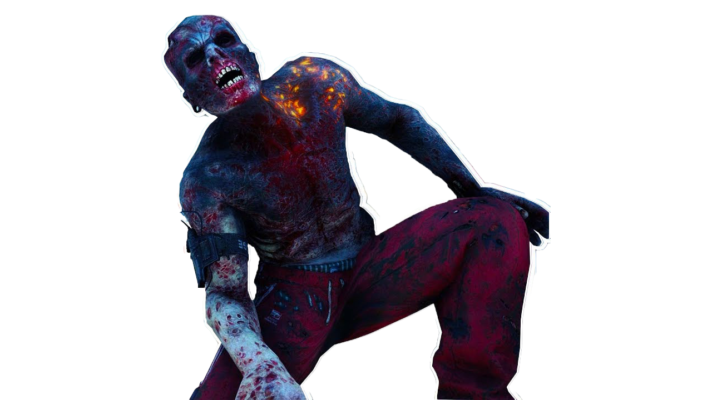
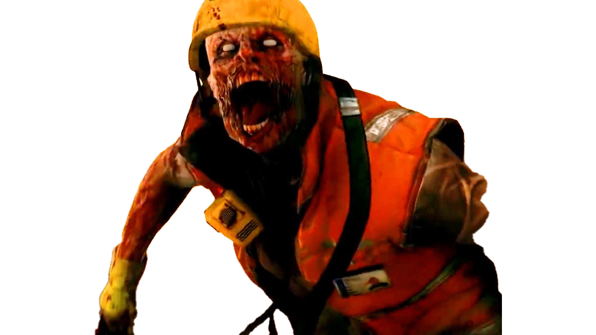

There are seven different types of zombies in the game
Gasbag
You can never mess Gasbag, just only because the yellow suit is visible for a mile. But that doesn't make him a simple opponent. Its fumes are highly toxic and it can easily ruin your whole game. The easiest tactic against him is"distance".The bull is the dumbest but also the strongest and the biggest opponent of which can only be found. If you are alone, you will need a lot of experience to beat him. in case you are not alone, it will be enough for him to target your teammate and you will quickly eliminate him from the back.
Bull

Bomber
Special zombie in military gear. The Bomber is a walking explosive with a delicate trigger. As such, Bombers should be treated with care or from a distance since getting close enough to survivors will trigger a countdown to a nasty suicidal explosion that deals massive damage. At a distance, the Bomber's explosive vests can be triggered to explode immediately with a few well-placed shots to the chest.The scariest and fastest, these are the two main parameters that make him an extremely dangerous enemy, he often sits in the corners and if you walk closer than 3 meters you have no chance on your own. But it becomes a simple enemy in a team as it can only attack one at a time.
Lurker

Infector
The Infector's toxic saliva quickly turns every living person into a zombie if he does not heal his damage in time. But that ends the danger, because overall they last little and they are not very fast.The screamer has a megaphone attached to it at all times, which causes its sounds to be amplified to a level that tears ears. As a result, his presence will be evident to all living and dead whenever he makes his characteristic scream. Also, unlike Infector, it's not easy to kill him.
Screamer

Booster
The booster emits strong fumes around it, making nearby zombies more resistant to damage and harder to kill. But he is not so dangerous in himself, you should only be afraid of him when there is a horde around him.